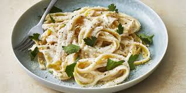

Fettuccine Alfredo

Recipe:
Fettuccine Alfredo Ingredients
- Pasta: Of course, you'll need fettuccine pasta.
- Butter: This Alfredo sauce starts with two sticks of butter.
- Cream: The rich sauce calls for almost a cup of heavy cream.
- Seasonings: The fettuccine Alfredo is simply seasoned with salt, pepper, and garlic salt.
- Cheese: You'll need Romano and Parmesan cheeses.
Directions:
STEP 1:
Bring a large pot of lightly salted water to a boil.
Add 24 ounces of dry fettuccine pasta and cook for 8 to 10 minutes or until al dente; drain.
STEP 2:
Melt 1 cup butter into 3/4 pint heavy cream in a large saucepan over low heat; add salt, pepper, and garlic salt.
Increase the heat to medium; stir in 3/4 cup grated Romano and 1/2 cup Parmesan cheese until melted and sauce has thickened.
STEP 3:
Add cooked pasta to sauce and toss until thoroughly coated, serve immediately.